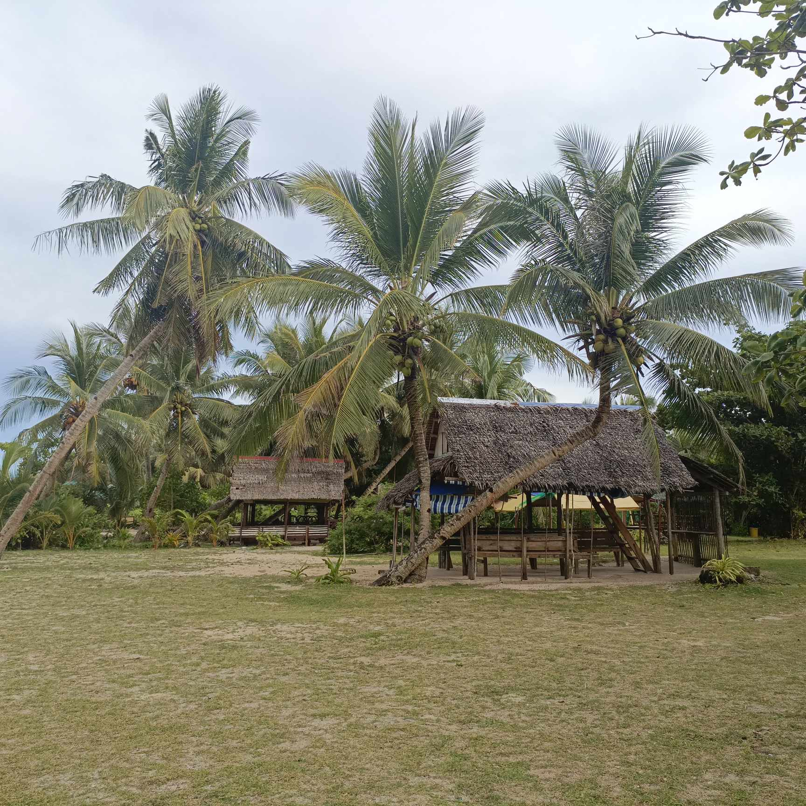
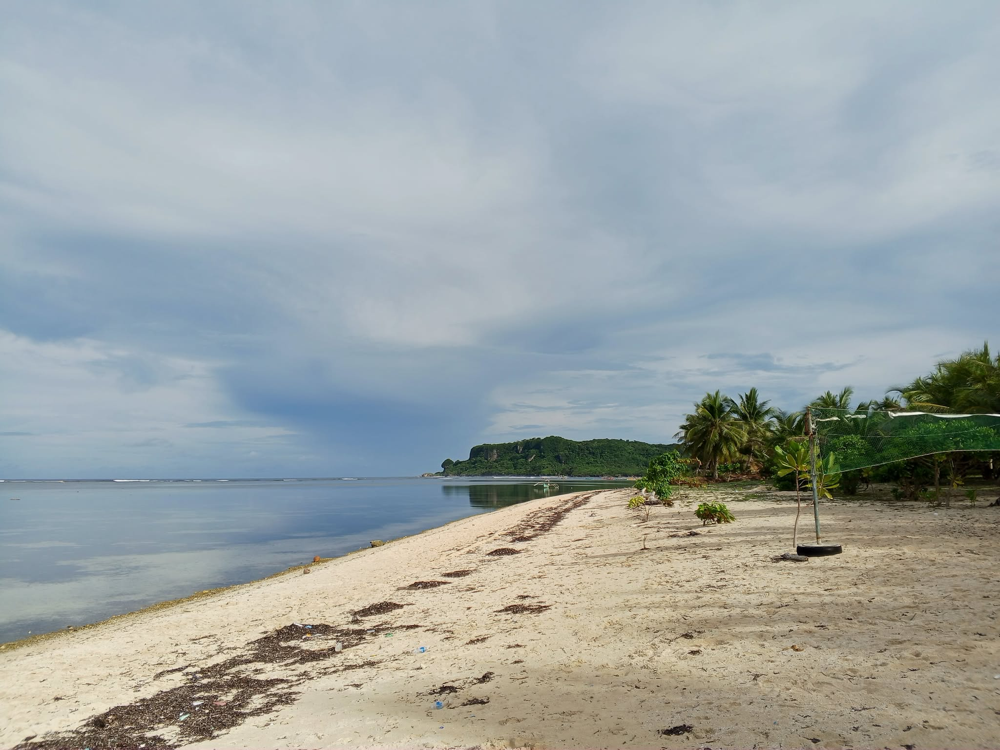

Barangay Sapao · 11°02′N 125°44′E
Experience the coastlines of Sapao
A fishing barangay on the Pacific side of Guiuan, where white-sand coves, a working weather-radar station, and a century-old parish share the same shoreline.
A quiet coast worth the walk in

